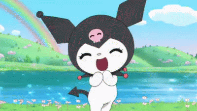
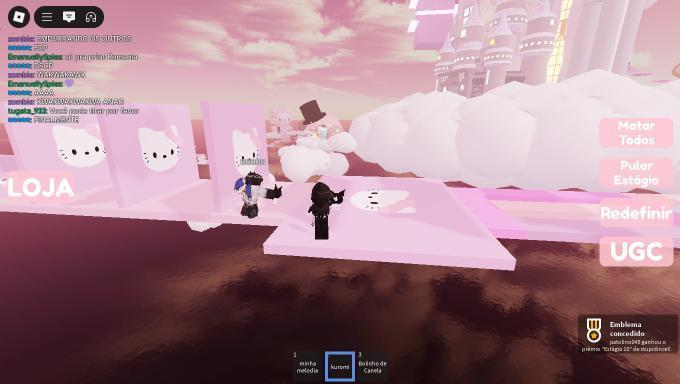
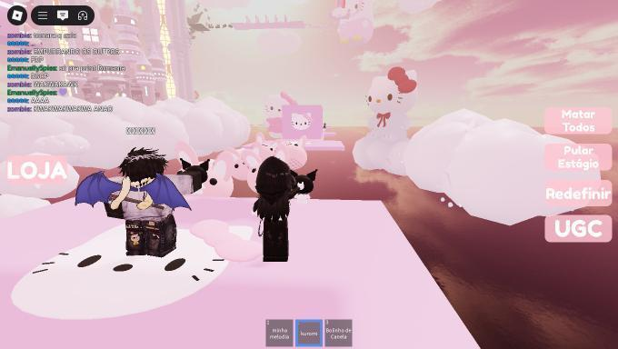

Viadagens
Cada memória compartilhada é um pedaço dessa amizade. Das piadas internas às conversas sérias, dos conselhos às brincadeiras, tudo se transforma em um capítulo único da história dos dois.




Um negro viu um branco e os 2 começaram a colher algodão junto e o branco chamado anndrey parou de escravizar a coitada dita chamada ''julia'' e assim se deu inicio a grande amizade de 2 negros
Para Anndrey, Júlia não é apenas uma amiga — ela é como uma irmã mais nova. Ele sente que deve cuidar dela, protegê-la e estar presente em todos os momentos, tanto nos fáceis quanto nos difíceis. Essa amizade não se trata apenas de companhia, mas de apoio, confiança e amor fraternal.
Júlia, por sua vez, enxerga em Anndrey não só um amigo, mas um irmão de coração. Alguém com quem ela pode contar sem medo de julgamentos, alguém que a entende até no silêncio e que sempre arranca um sorriso quando ela mais precisa. Juntos, eles construíram algo puro e verdadeiro: uma amizade que é para a vida toda.
Cada memória compartilhada é um pedaço dessa amizade. Das piadas internas às conversas sérias, dos conselhos às brincadeiras, tudo se transforma em um capítulo único da história dos dois.
Esse mural é um espaço aberto para guardar mensagens, lembranças e tudo aquilo que representa a amizade de Anndrey e Júlia. 💜